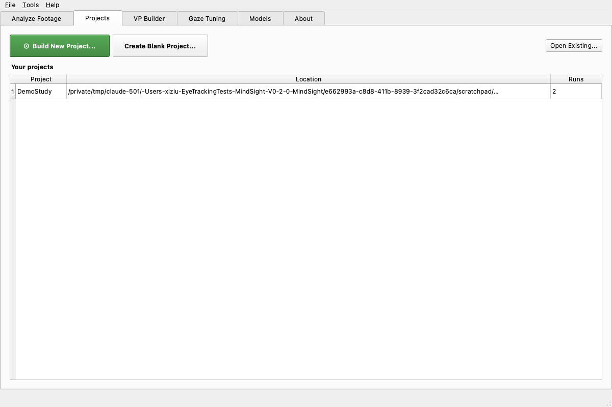
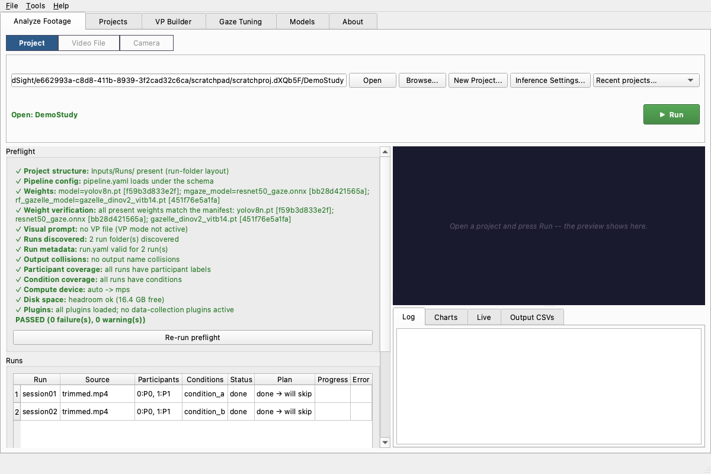
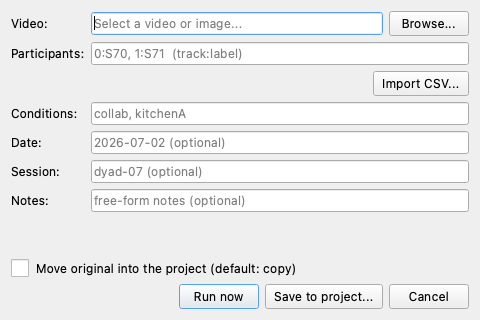
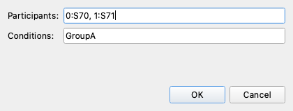
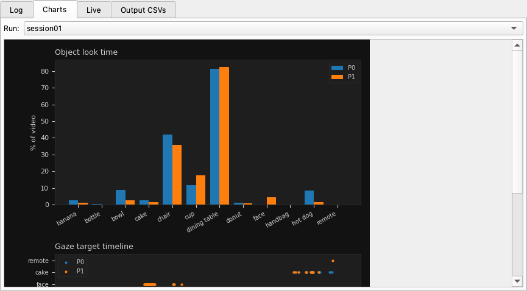
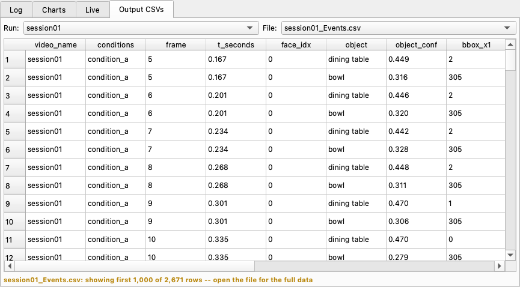
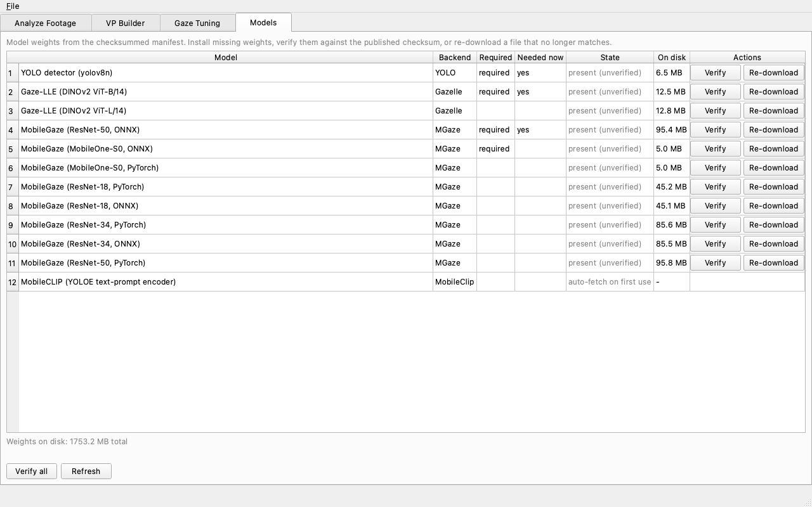

Run a Study with MindSight¶
This is a start-to-finish walkthrough for a research assistant who has been handed a set of recordings and asked to run them through MindSight. It assumes no prior experience with the command line -- every step is a click in the app.
The guide is deliberately generic. Wherever it says your study or your study
lead, fill in the specifics your lab gave you. The concrete example it points
at is the Projects/ExampleStudy/ folder that ships with MindSight and the
shipped preset configs/pipeline_known_good.yaml -- use them as a reference for
the shape of a real project.
What you need before you start
- MindSight installed (below).
- The study project folder your study lead prepared, or the videos plus the participant/condition scheme to build one.
- A rough idea of your study's conditions (the experimental labels for each recording) and participants (who is in each recording).
1. Install MindSight¶
MindSight ships as a double-click installer that sets up a private Python, all of MindSight's dependencies, and the four required model weights (about 115 MB). You do not need to install anything else first -- no Python, no packages.
- Download the release zip (for example
MindSight-1.0.0-mac.zip) from the lab's release location. (Download links go live once the first tagged release is published; until then your study lead will hand you the zip.) - Double-click the zip in Finder to extract it, then move the extracted folder somewhere you can find again (Desktop or Downloads is fine).
- Open the extracted folder. Right-click (or Control-click)
Install-MindSight.commandand choose Open. - macOS Gatekeeper may warn that the file is from an unidentified developer. Because you used right-click > Open, the dialog gives you an Open button -- click it. (A plain double-click only offers Move to Trash; right-click > Open is how you get past it. This is expected for an in-house tool that is not code-signed.)
- A Terminal window opens and walks through six steps, printing a line for
each. Leave it running -- installing dependencies and downloading the
weights takes several minutes. It finishes with either
MindSight install: PASSorMindSight install: FAILED at step N. - Press Return to close the window.
The installer creates a MindSight app in your Applications folder and a matching MindSight link on your Desktop. Open either one to launch the app. The first launch may prompt Gatekeeper once more -- use right-click > Open that one time.
Everything lives under ~/MindSight (your home folder's MindSight
directory). Your results are written inside ~/MindSight/app/Outputs/.
(Screenshots of the macOS Finder / Gatekeeper / Terminal install steps are to follow. The wording above matches exactly what you will see.)
- Download the release zip (for example
MindSight-1.0.0-win.zip). (Download links go live once the first tagged release is published.) - Right-click the zip, choose Extract All..., and extract it to a folder you can find again.
- Open the extracted folder and double-click
Install-MindSight.bat. - Windows may show a blue "Windows protected your PC" SmartScreen box because the installer is unsigned. Click More info, then Run anyway. (This is expected for an in-house tool.)
- A console window walks through seven steps. Leave it running; it finishes
with
MindSight install: PASSorMindSight install: FAILED at step N. - Press a key to close the window.
Launch MindSight from the MindSight shortcut on your Desktop or Start
Menu. Everything lives under %LOCALAPPDATA%\MindSight (usually
C:\Users\<you>\AppData\Local\MindSight); results land in
...\MindSight\app\Outputs\.
(Windows install screenshots are to follow; the SmartScreen wording above is exactly what appears.)
If your lab set you up on a shared lab machine that already has MindSight, skip this section -- just open the app.
2. The home screen¶
When MindSight opens you land on the Analyze Footage tab. At the top of the tab is a three-way mode switch -- Project | Video File | Camera -- and the whole tab changes with it:
- Project -- open a study project, read its preflight checklist, and run the whole batch. This is where you spend almost all of your time.
- Video File -- analyze a single video without any project. Good for a quick look at one recording.
- Camera -- record and analyze live from a webcam.

The other tabs are for occasional tasks:
- Projects -- your project library: build a new study project with the wizard, reopen a recent one, or review a project's runs, notes, and outputs.
- VP Builder -- make a visual prompt (teaches the detector your study's objects).
- Inference Tuning -- an interactive playground for experimenting with gaze settings on a live preview. Settings here do NOT affect your study runs -- those come from the project's pipeline preset and the Inference Settings dialog (see the appendix).
- Models -- check, verify, or re-download the model weights.
3. Open the study project folder¶
A MindSight project is just a folder with a known layout. Your study lead most likely handed you one already; if so, that folder is your starting point.
Any of these opens it -- use whichever is closest to hand:
- Projects tab -- your library lists recent projects with their run counts; double-click one, or Browse... to any folder.
- Analyze Footage, Project mode -- Browse..., paste a path and press Open, or pick from the Recent projects... dropdown.
- File menu -- Open Project....
- Drag and drop -- drop the project folder anywhere onto the Analyze Footage tab.
Opening a project snaps Analyze Footage into Project mode with that project loaded.
The example project that ships with MindSight, Projects/ExampleStudy/, shows
the shape a project takes:
ExampleStudy/
├── project.yaml # points at the pipeline preset; holds participants/conditions
├── notes.md # free-form study notes (shown on the Projects tab)
├── Pipeline/
│ └── pipeline.yaml # the pipeline preset this study runs with
├── Inputs/
│ ├── Runs/ # one subfolder per recording session (run-folder layout)
│ ├── Videos/ # (legacy flat layout) recordings directly in a folder
│ └── Prompts/ # your study's .vp.json visual prompt, if you use one
└── Outputs/ # created for you when you Run
The pipeline preset is MindSight's pre-tuned known-good configuration: detection, gaze, and Gaze-LLE Blend settings validated on classroom-style footage. You normally never touch it -- the wizard writes it for you, or your study lead has already pointed the project at the right one.
A project uses one of two layouts for its recordings:
- Run-folder layout -- each recording session gets its own folder under
Inputs/Runs/<run_id>/holding exactly one video plus arun.yamlwith that session's participants and condition. This is what the wizard builds, and the layout every new study should use. - Flat layout (legacy) -- videos sit directly in
Inputs/Videos/. Still supported for older projects.
Do not mix both in one project -- preflight will stop you if a project has videos in both places.
4. Build a project with the wizard¶
If your study lead handed you a finished project folder, skip to preflight. If you have loose recordings and a study scheme, the Build New Project... wizard on the Projects tab (also under File) assembles the folder for you in five steps:

- Study -- name the project, choose where it lives, note how many people
appear per video, and type your study's conditions vocabulary (the fixed
list of experimental labels, e.g.
baseline,intervention). Defining them here turns the tagging step into simple checkboxes. -
Videos -- add your recordings. Each gets an editable, unique run name (this becomes its folder and output name). Files are copied into the project by default (safest); tick move only if you want the originals gone from their old location.
You do not need all the footage up front. Add Planned Sessions... defines future sessions now -- name them and take their participant and condition tags in the tagging step like any other video -- and they sit in the project as awaiting recording until the day you record them live or attach their footage (see recording sessions). If your study has a known schedule (say, ten weekly sessions), planning them all at creation time means the metadata is done once and each session day is just record-and-go. 3. Tag each video -- one video at a time: a middle-frame preview on the left, and on the right the participant fields ("Leftmost person", "2nd from left", ... -- type each person's ID by their on-screen position), the condition checkboxes, and date / session / notes (the date is prefilled from the file). Untagged videos are allowed -- you get a warning, and can fill metadata in later.
-
Pipeline -- pick the preset the study runs with. KG_Standard (the shipped known-good preset) is the right choice unless your study lead says otherwise.
- Review & create -- a summary of everything; Create builds the
folder, stages every video into
Inputs/Runs/<run_id>/with itsrun.yaml, and writesPipeline/pipeline.yamlandnotes.md.
When it finishes, use ▶ Open in Analyze Footage on the project overview to go straight to preflight.
5. Read the preflight checklist¶
Every time you open a project (and again whenever you click Re-run preflight) MindSight runs a preflight check: a readiness checklist that catches the common problems before you spend hours processing. Green checks are fine, yellow are warnings you can usually ignore, red are things you must fix.

A healthy project reads PASSED, possibly with a warning or two (missing participant labels and low disk are warnings, not blockers). If preflight shows a red FAIL, do not press Run -- find the row in the troubleshooting table at the bottom of this page, which explains every preflight message in plain language and who to call.
Below the checklist, the Runs table lists every recording MindSight found, one row each, with its participants, condition, current status, and what Run will do to it (process it, or re-run and archive the previous output). Planned sessions that have no footage yet show as awaiting recording.
Everything in the left column -- preflight, the runs table, and the Study setup panel -- scrolls together if it outgrows the window.
6. Add, edit, record¶
If the project already has its videos and metadata, skip ahead to Run. These are the controls under the Runs table for everything else.
Add a recording¶
Click Add single run... to add one recording at a time. Pick the video with Browse..., then fill in the fields:

- Participants -- a
track:labelmap, e.g.0:P0, 1:P1. The number is the detected face's tracking id; the label is your name for that person. Leave it blank and MindSight defaults toP0, P1, .... - Import CSV... -- if your study keeps a
participant_ids.csv, load a row from it instead of typing. - Conditions -- the experimental condition tag(s) for this recording, e.g.
condition_a. These become a column in the outputs and drive the per-condition aggregates. - Date / Session / Notes -- optional bookkeeping.
- Move original into the project -- leave unchecked to copy the video in (the default, and safest); check it to move the file instead, so the original leaves its old location.
Click Run now to process immediately, or Save to project... to add it and run everything later.
Edit a recording's metadata¶
To change a recording's participants or condition after adding it, select its row and use Edit run...:

Record a session (live)¶
If your study records participants live at the computer, ⏺ Record
Session... captures straight into the project: pick the camera, pick (or
name) the session -- planned sessions prefill their tags -- and press Start.
The preview shows the live feed and the status line counts time and frames.
Press End Session to stop: the raw recording is staged into
Inputs/Runs/<run_id>/ like any other video and analysis starts on it
automatically.
To use footage recorded on another device (a camcorder, a phone), right-click the planned session's row and choose Attach footage... -- the file is copied in (your original is untouched) and MindSight offers to analyze it.
Sessions do not have to be planned in the wizard: for an existing project, ＋ Plan Session... (next to the runs table on the project's Projects-tab overview) adds a future session -- name and tags now, footage later. And unplanned sessions land just as easily: ⏺ Record Session... can target a new session named on the spot, and footage that arrives as a file goes in through Add single run.... Planning ahead just means the tags are already filled in when the session day comes.
Study-wide settings¶
Study-wide settings -- the pipeline preset in use, the project-wide participant map, and per-video conditions -- are edited on the Projects tab: open your project's overview, expand Study setup, and press Save project.yaml. To de-identify outputs (blur or black out faces in the annotated video and heatmap backgrounds -- e.g. when your ethics protocol requires it), turn on Anonymize faces in the Inference Settings... dialog; like every processing option, it applies to any run you launch until you turn it off.
7. Run the analysis¶
When preflight passes and the runs table looks right, press the green ▶ Run button on the project card at the top of the tab. It turns into a red Stop while the batch is live. MindSight processes each recording in turn.
What normal progress looks like. The preview pane shows the annotated video
as it processes, and the Log panel prints a line-by-line trace: it loads
the models (you will see the MobileGaze gaze backend and the Gaze-LLE
scene model come up), then reports per-frame progress, then a Done line per
video with the frame count and how many gaze-object hit events it recorded.
The runs table fills in as each video completes.
How long it takes. Expect each video to take from about its own duration up to several times longer, depending heavily on the machine and on whether the annotated video is being rendered (rendering is the slowest output by far). As a rough anchor, a short clip runs in a few minutes on Apple Silicon; a full 30-minute session can take substantially longer, especially on a CPU-only machine. Treat a full study batch as an overnight job: start it at the end of the day, leave the machine awake and plugged in, and check it in the morning. If it is interrupted, MindSight resumes where it left off (see section 9) -- you will not lose completed work.
You can press Stop to halt after the current frame; already-completed videos keep their outputs. If you try to quit mid-run, MindSight asks first -- choosing Yes stops cleanly and finishes writing the current video's summary before closing, so you never end up with a half-written output.
8. Outputs and what to hand the analyst¶
When a batch finishes, its results are under the project's Outputs/ folder.
You can inspect them without leaving the app:
- The Charts tab (in the output panel, bottom right) shows the phenomena charts for a selected run -- a quick visual sanity check.

- The Output CSVs tab is a read-only viewer over the run's event and summary CSVs.

The files themselves live under Outputs/Runs/<run_id>/ (run-folder projects)
or Outputs/CSV Files/ (flat projects, and the project-wide Global_*
aggregates). The full catalogue -- what each file is and when to use it -- is on
the Understanding the Outputs page. The short version:
| File | What it is | Hand to analyst? |
|---|---|---|
{stem}_summary.csv (and Global_summary.csv, By Condition/) |
Aggregated look-time and phenomena metrics | Yes -- this is the main file |
{stem}_manifest.json |
Provenance: exact config, model hashes, versions | Yes -- keeps results traceable |
{stem}_Events.csv (and Global_Events.csv) |
One row per gaze-object hit per frame | Only if the analysis needs frame-level detail |
| Heatmaps, Charts, annotated video | Visual review aids | No -- for review, not statistics |
The handoff is usually small: the summary CSV (or the project-mode
Global_summary.csv / By Condition/ files) plus the manifest JSON so the
numbers are traceable. When in doubt about which files your study wants, ask your
study lead or the analyst.
9. Re-run one failed video¶
If a single recording failed or you fixed its metadata and want just that one reprocessed, you do not re-run the whole batch. Project runs resume by default: MindSight keeps a ledger of what is already done and skips completed videos.
- To reprocess one recording, right-click its row in the runs table and choose Re-run this run. The row's status tells you what Run will do to it -- re-run + archive means the previous output is set aside first, not deleted.
- Run processes everything that is not already complete.
- Re-run all (it asks for confirmation) reprocesses everything from scratch, ignoring the ledger; prior outputs are archived. Your study lead can tell you when that is warranted.
Because runs resume, an interrupted overnight batch is safe to simply start again -- it picks up the remaining videos.
10. Fix a recording: crop and frame rate¶
If a camera captured more room than the study needs, or a device recorded at an odd frame rate, use Crop & Adjust Videos... on the project overview (Projects tab). Drag a rectangle over the preview to crop, or set a new frame rate; queue edits across several videos and apply them in one batch.
Cropping is worth doing: MindSight generally performs best when the footage is tightly cropped to the areas that matter to your study. For a desk task, that means the participants and the desktop -- crop away the feet, the floor, and the blank space above their heads. Less irrelevant frame means fewer spurious detections and more of the resolution spent on faces and objects.
- Edits are non-destructive by default: the untouched original is kept in
an
original/folder beside the video. (A warned checkbox overwrites instead.) - Auto-crop can place the rectangle for you: name the objects that matter ("person, dining table") or point it at your study's visual prompt file, and it fits the crop around what it finds, plus padding. You always get to review and adjust the rectangle before applying. An Advanced... toggle picks the detector model and sets each side's padding independently (negative padding crops inside the detections).
- An edited video is detected automatically on the next Run -- its old outputs are archived and it reprocesses with the new picture.
Quick analysis without a project¶
For a fast look at a single recording -- no folders, no metadata -- switch Analyze Footage to Video File mode: browse to the file (or drop it onto the tab), and press Analyze. Live charts fill the left pane while it processes, and the output folder (prefilled, editable) gets the same CSVs a project run produces.
Camera mode does the same from a webcam: Refresh lists your cameras by name, Start Camera records and analyzes live, and Stop finalizes the outputs. The optional Session details fields (participants, session, notes) carry your labels into the output CSVs, so an ad-hoc recording can still land with proper metadata.
Quick runs use the settings from the Inference Settings dialog (the button is right on the tab) -- fresh installs start on the shipped known-good preset, so the numbers match a project run out of the box.
Appendix: the other tabs¶
You will not need these for a routine batch, but here is what they are for.
Visual prompts (VP Builder)¶
The known-good preset uses a YOLOE open-vocabulary detector, which works best
with a visual prompt: a small .vp.json file that gives the detector example
boxes of the objects your study cares about. Your study lead usually prepares
this once and drops it in Inputs/Prompts/.
If you need to build one, the VP Builder tab loads reference images, lets you name object classes and draw boxes on them, then Save VP File...:


The reference image should match your video's resolution -- YOLOE encodes object size in pixels. Extract Frames... on the toolbar pulls evenly spaced stills straight out of a video (or out of every video in a project) to use as reference images.
To share a visual prompt between machines, Export Portable... packs the
prompt and its reference images into a single .vp.zip; Load VP File on the
other machine opens it directly. To use a prompt in your study's runs, set the
Visual prompt file in the Inference Settings dialog, or have your study
lead add it to the project's pipeline preset.
Inference Settings¶
Inference Settings... (a button on every Analyze Footage mode, and under the Tools menu) is the control panel for how runs launched from Analyze Footage are processed -- models and compute device, gaze estimation, object detection, which phenomena are tracked, outputs, and performance, across seven tabs.

The header shows which preset the settings come from (fresh installs: KG_Standard, the shipped known-good preset) and whether you have modified it. Values you type can go beyond a slider's usual range -- the value shows amber instead of being clamped. Save to project pipeline... writes the current settings into the open project's preset so the whole study runs with them; coordinate with your study lead before changing a running study's settings.
Inference Tuning¶
The Inference Tuning tab is an interactive playground: load a clip, watch the gaze overlay live, and experiment with detector and ray settings to see their effect immediately. It is the right place to find good values -- and since it is deliberately decoupled from everything else, nothing you try here changes your study's runs. When an experiment is worth keeping, bring it across with Import from Inference Tuning in the Inference Settings dialog (or Import from Inference Tuning in the Projects tab's Study setup).

Models¶
The Models tab lists every model weight, whether it is required, present, and verified against its published checksum. If preflight complains about a weight, come here to Verify or Re-download it.

See also¶
For each surface above, the GUI Guides cover it in more depth:
- GUI Tour -- a map of the whole window.
- Projects and sessions -- building projects, planning and recording sessions, run management.
- Analyze footage -- the Project, Video File, and Camera modes in depth.
- Visual prompts -- building, tuning, and sharing
.vp.jsonfiles. - Crop and adjust -- re-framing recordings and auto-crop.
- Inference settings and tuning -- the dialog vs. the tuning tab.
- About and theming -- the in-app reader and theme control.
- Where things live -- every file on disk.
11. Troubleshooting: every preflight message¶
The table below lists every warning or failure message preflight can print,
what it means, and who to go to. Passing (green) checks
are not listed; the table covers only warnings (yellow -- usually safe to
proceed) and failures (red -- must fix before Run). Placeholders like {...}
are filled in with the specific file or value when you see the real message.
| Preflight message | What it means | Severity / who to call |
|---|---|---|
project directory not found: {path} |
The folder you opened is not there -- wrong path, or an external drive is unmounted. | FAIL. Re-open the correct project folder; remount the drive. |
both Inputs/Runs/ and Inputs/Videos/ are populated -- the layout is ambiguous |
The project mixes flat and run-folder layouts; MindSight cannot tell which to use. | FAIL. Keep run folders or flat videos, not both. Ask your study lead which layout this study uses. |
missing Inputs/Videos/ under {project} |
Flat-layout project has no Inputs/Videos/ folder to read from. |
FAIL. Create Inputs/Videos/ and add the recordings (or use Add single run...). |
no pipeline config found; schema defaults will apply |
The project does not point at a pipeline preset, so built-in defaults are used. | WARN. Fine for a quick look; for a real study, set pipeline: in project.yaml to configs/pipeline_known_good.yaml. |
{name} invalid: {exc} |
The pipeline YAML has a syntax or value error. | FAIL. The message names the file and the problem; ask your study lead, or fix the pipeline YAML. |
no weights configured (auto-download names not resolved) |
No model weight paths are set in the config. | WARN. Usually fine (the preset names them); if detection does nothing, check the config with your study lead. |
weight file(s) not found -- {msg} |
A model weight file is missing. The message prints the exact absolute path where each missing file is expected (the shared Weights/ folder -- weight resolution is global, not per-project). |
FAIL. Put the weight at the printed path: the Models tab can Re-download the standard ones, or run the installer again. |
manifest unavailable: {exc} |
The checksum manifest that verifies weights could not be read. | WARN. Reinstall or restore weights_manifest.json; weights still load. |
{name} differs from the published '{label}' weight |
A weight file does not match its published checksum -- corrupted or altered. | FAIL. Models tab > Re-download that weight (or mindsight-weights --force). |
custom weight(s) not in the manifest: {names} |
You are using a weight the manifest does not know about. | WARN. Custom weights are allowed; expected if your lab uses a custom model. |
VP-mode detector configured but no .vp.json in Inputs/Prompts/ |
The config expects a visual prompt but none is present. | WARN. Add your study's .vp.json to Inputs/Prompts/ (VP Builder), or ask your study lead for it. |
{name} is not valid JSON: {exc} |
The visual prompt file is corrupted. | FAIL. Re-export the .vp.json from the VP Builder. |
{name} has no reference with annotations |
The visual prompt has no annotated reference image. | FAIL. Add an annotated reference in the VP Builder and re-save. |
ambiguous layout -- no runs to process |
Layout is ambiguous, so no recordings could be listed. | FAIL. Resolve the flat-vs-run-folder ambiguity (see above). |
no run folders found in Inputs/Runs/ |
Run-folder project has an empty Inputs/Runs/. |
FAIL. Add Inputs/Runs/<run_id>/ folders, each with one video. |
all {n} session(s) awaiting recording |
Every session in this project is planned -- it has its run.yaml metadata but no footage yet. Nothing can be processed until at least one is recorded or attached. |
WARN. Record the sessions live (⏺ Record Session...) or right-click each row and Attach footage.... |
run folder(s) not holding exactly one video: {bad} |
A run folder has several videos, or none and no run.yaml (a videoless folder with a run.yaml is a planned session, which is fine). |
FAIL. Put exactly one primary video in each named run folder. |
output name collision: {names} both write {file} |
Two source recordings would write the same output CSV (e.g. a.mp4 and a.mov both produce a_Events.csv), so one would overwrite the other's results. |
FAIL. Rename one of the colliding source files. |
Inputs/Videos/ is missing -- no runs to process |
Flat project has no videos folder, so nothing to run. | FAIL. Create Inputs/Videos/ and add recordings. |
no video/image sources found in Inputs/Videos/ |
The videos folder exists but is empty. | FAIL. Add at least one recording (or use Add single run...). |
run.yaml problem(s): {errs} |
A run folder's run.yaml metadata is invalid. |
FAIL. Fix the run.yaml as the message describes; ask your study lead if unsure. |
unknown run.yaml key(s): {warns} |
A run.yaml has keys MindSight does not recognize (likely a typo). |
WARN. Use only the known keys (participants, conditions, date, session, notes, extra). |
{n}/{m} run(s) without participant labels: {ids} |
Some recordings have no participant map. | WARN. Optional -- MindSight defaults to P0, P1, .... Add labels if your analysis needs named participants. |
{n}/{m} run(s) without conditions: {ids} |
Some recordings have no condition tag. | WARN. Optional, but per-condition aggregates need condition tags -- add them if your study uses conditions. |
device '{req}' check failed: {exc} |
The requested compute device could not be initialized. | FAIL. Set the device to auto or cpu; report to your study lead if it persists. |
device '{req}' is not available |
The requested device (e.g. a GPU) is not present on this machine. | FAIL. Choose an available device, or auto / cpu. |
could not check free space: {exc} |
MindSight could not read the disk's free space. | WARN. Verify the volume has room manually and proceed. |
low disk: {free} GB free < {need} GB (1.5x inputs) |
Not much free space for outputs. | WARN. Free up space, or turn off the annotated video output, before a big batch. |
plugin load error(s): {errs} |
An analysis plugin failed to load. | FAIL. Fix or remove the failing plugin; report to your study lead / a developer. |
check crashed: {exc} |
A preflight check itself errored -- unexpected. | FAIL. Report this to a developer with the message; it is a bug, not your setup. |
Two behaviors worth knowing alongside the table: the disk-space check only runs when the annotated video output is enabled (with it off, no extra headroom is needed), and in no-object-detection mode (an Inference Settings option some studies use) the detector-weight and visual-prompt rows above simply do not apply -- preflight skips them.
Save this guide as a PDF¶
To keep an offline copy, print this page to PDF from your browser:
- macOS -- File > Print (or ⌘P), then in the print dialog choose Save as PDF from the PDF dropdown (bottom-left) and save.
- Windows -- Ctrl+P, then choose Microsoft Print to PDF (or Save as PDF) as the printer and save.
- Chrome / Edge (any OS) -- Ctrl/⌘P, set the destination to Save as PDF, and save.
A pre-generated PDF of this tutorial,
run-a-study-tutorial.pdf, is committed alongside
this page for convenience.